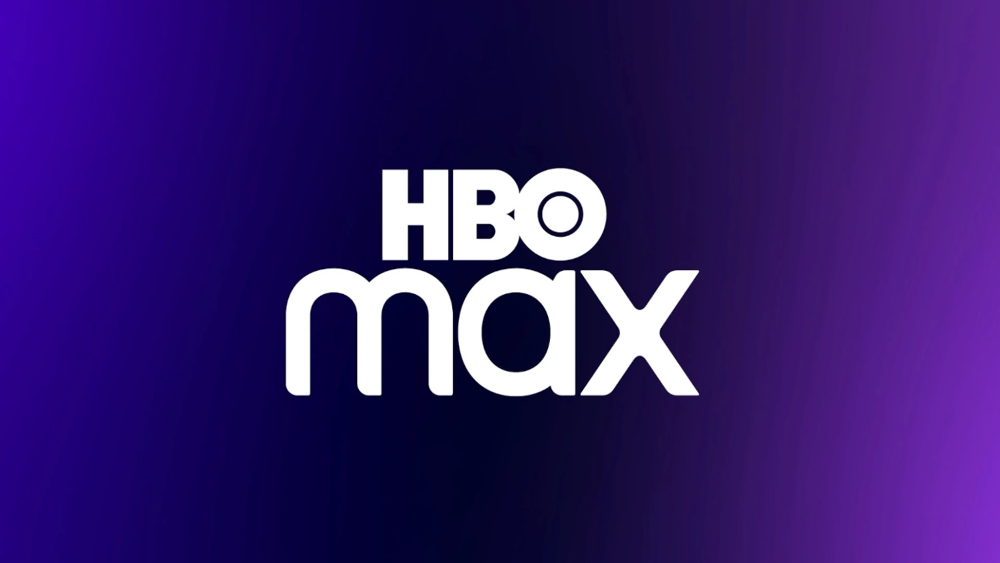

¿Que es el streaming y porque pagar una suscripcion
Una de las principales ventajas que tienen las plataformas de streaming,
es que son muy sencillas de usar, ya que no necesitan de instalar o descargar otras herramientas para que funcionen.
Esto, junto a su intuitiva navegación, provoca que cualquiera pueda usarlo sin necesidad de algún instructivo.
El pagar una suscripcion de streaming es muy beneficioso,
ya no tendrias que esperar el fin de semana para ver una pelicula en el canal 5, tendrias acceso a peliculas en cualquier
lugar que estes, en caso de que vayas a salir y quieras continuar con tu serie y te hayas quedado sin señal puedes descargarlos
capitulos en donde quiera que estes.
Las platraformas mas comunes
En Netflix, aspiramos a entretener al mundo con grandes historias provenientes de cualquier lugar.
También aspiramos a dar a la gente más control y más opciones entre las que elegir, sin importar dónde viva.
Disney+ (Disney Plus) es un servicio de streaming propiedad de The Walt Disney Company mediante su división Disney Entertainment.
El servicio ofrece películas, documentales, especiales, cortos, programas y series de televisión producidas por The Walt Disney Studios y Disney General Entertainment Content.

HBO Max es la nueva plataforma de streaming que reúne todos los contenidos de HBO junto con aún más éxitos de taquilla,
series generadoras de obsesión y exclusivos Max Originals
 En Netflix, aspiramos a entretener al mundo con grandes historias provenientes de cualquier lugar.
También aspiramos a dar a la gente más control y más opciones entre las que elegir, sin importar dónde viva.
En Netflix, aspiramos a entretener al mundo con grandes historias provenientes de cualquier lugar.
También aspiramos a dar a la gente más control y más opciones entre las que elegir, sin importar dónde viva.